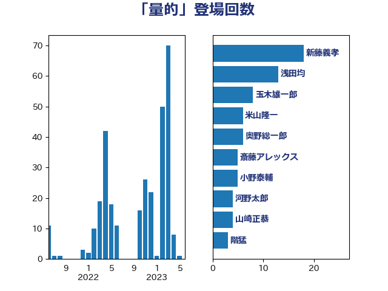

単語「量的」

| 新藤義孝 | 自由民主党 | 18 回 |
| 浅田均 | 日本維新の会 | 13 回 |
| 玉木雄一郎 | 国民民主党 | 8 回 |
| 米山隆一 | 立憲民主党 | 6 回 |
| 奥野総一郎 | 立憲民主党 | 6 回 |
| 斎藤アレックス | 国民民主党 | 5 回 |
| 小野泰輔 | 日本維新の会 | 5 回 |
| 河野太郎 | 自由民主党 | 4 回 |
| 山崎正恭 | 公明党 | 4 回 |
| 階猛 | 立憲民主党 | 3 回 |
| 阿部司 | 日本維新の会 | 3 回 |
| 芳賀道也 | 国民民主党 | 3 回 |
| 船田元 | 自由民主党 | 3 回 |
| 田村まみ | 国民民主党 | 3 回 |
| 永岡桂子 | 自由民主党 | 3 回 |
| 上田清司 | 国民民主党 | 3 回 |
| 野田佳彦 | 立憲民主党 | 2 回 |
| 近藤昭一 | 立憲民主党 | 2 回 |
| 藤巻健太 | 日本維新の会 | 2 回 |
| 葉梨康弘 | 自由民主党 | 2 回 |
| 若宮健嗣 | 自由民主党 | 2 回 |
| 田村貴昭 | 日本共産党 | 2 回 |
| 牧山ひろえ | 立憲民主党 | 2 回 |
| 林芳正 | 自由民主党 | 2 回 |
| 岸田文雄 | 自由民主党 | 2 回 |
| 岡田直樹 | 自由民主党 | 2 回 |
| 勝部賢志 | 立憲民主党 | 2 回 |
| 加藤勝信 | 自由民主党 | 2 回 |
| 仁木博文 | 無所属 | 2 回 |
| 中谷元 | 自由民主党 | 2 回 |
| 高木真理 | 立憲民主党 | 1 回 |
| 高木かおり | 日本維新の会 | 1 回 |
| 馬場伸幸 | 日本維新の会 | 1 回 |
| 須藤元気 | 無所属 | 1 回 |
| 関芳弘 | 自由民主党 | 1 回 |
| 鈴木英敬 | 自由民主党 | 1 回 |
| 進藤金日子 | 自由民主党 | 1 回 |
| 足立康史 | 日本維新の会 | 1 回 |
| 萩生田光一 | 自由民主党 | 1 回 |
| 稲富修二 | 立憲民主党 | 1 回 |
| 秋本真利 | 自由民主党 | 1 回 |
| 石破茂 | 自由民主党 | 1 回 |
| 石井拓 | 自由民主党 | 1 回 |
| 田島麻衣子 | 立憲民主党 | 1 回 |
| 田中健 | 国民民主党 | 1 回 |
| 熊谷裕人 | 立憲民主党 | 1 回 |
| 浜口誠 | 国民民主党 | 1 回 |
| 浅尾慶一郎 | 自由民主党 | 1 回 |
| 櫛渕万里 | れいわ新選組 | 1 回 |
| 横沢高徳 | 立憲民主党 | 1 回 |
| 森山浩行 | 立憲民主党 | 1 回 |
| 梶原大介 | 自由民主党 | 1 回 |
| 梅谷守 | 立憲民主党 | 1 回 |
| 柴田巧 | 日本維新の会 | 1 回 |
| 枝野幸男 | 立憲民主党 | 1 回 |
| 松山政司 | 自由民主党 | 1 回 |
| 松原仁 | 立憲民主党 | 1 回 |
| 徳永久志 | 立憲民主党 | 1 回 |
| 後藤茂之 | 自由民主党 | 1 回 |
| 岬麻紀 | 日本維新の会 | 1 回 |
| 山添拓 | 日本共産党 | 1 回 |
| 山本博司 | 公明党 | 1 回 |
| 山口晋 | 自由民主党 | 1 回 |
| 小西洋之 | 立憲民主党 | 1 回 |
| 小宮山泰子 | 立憲民主党 | 1 回 |
| 土田慎 | 自由民主党 | 1 回 |
| 吉良州司 | 無所属 | 1 回 |
| 古賀友一郎 | 自由民主党 | 1 回 |
| 勝俣孝明 | 自由民主党 | 1 回 |
| 倉林明子 | 日本共産党 | 1 回 |
| 佐藤英道 | 公明党 | 1 回 |
| 佐々木さやか | 公明党 | 1 回 |
| 住吉寛紀 | 日本維新の会 | 1 回 |
| 伊藤俊輔 | 立憲民主党 | 1 回 |
| 仁比聡平 | 日本共産党 | 1 回 |
| 中谷真一 | 自由民主党 | 1 回 |
| 中川正春 | 立憲民主党 | 1 回 |
| 下野六太 | 公明党 | 1 回 |
| 三木圭恵 | 日本維新の会 | 1 回 |